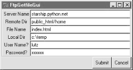
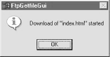
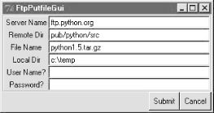
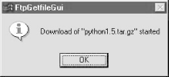
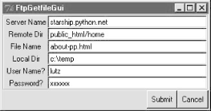
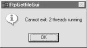
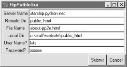

| I l@ve RuBoard |
|
11.2 Transferring Files over the NetAs we saw in the previous chapter, sockets see plenty of action on the Net. For instance, the getfile example at the end of that chapter allowed us to transfer entire files between machines. In practice, though, higher-level protocols are behind much of what happens on the Net. Protocols run on top of sockets, but hide much of the complexity of the network scripting examples we've just seen. FTP -- the File Transfer Protocol -- is one of the more commonly used Internet protocols. It defines a higher-level conversation model that is based on exchanging command strings and file contents over sockets. By using FTP, we can accomplish the same task as the prior chapter's getfile script, but the interface is simpler, and standard -- FTP lets us ask for files from any server machine that supports FTP, without requiring that it run our custom getfile script. FTP also supports more advanced operations such as uploading files to the server, getting remote directory listings, and more. Really, FTP runs on top of two sockets: one for passing control commands between client and server (port 21), and another for transferring bytes. By using a two-socket model, FTP avoids the possibility of deadlocks (i.e., transfers on the data socket do not block dialogs on the control socket). Ultimately, though, Python's ftplib support module allows us to upload and download files at a remote server machine by FTP, without dealing in raw socket calls or FTP protocol details. 11.2.1 FTP: Fetching Python with PythonBecause the Python FTP interface is so easy to use, let's jump right into a realistic example. The script in Example 11-1 automatically fetches and builds Python with Python. No, this isn't a recursive chicken-and-egg thought exercise -- you must already have installed Python to run this program. More specifically, this Python script does the following:
The download portion will run on any machine with Python and sockets; the unpacking and compiling code assumes a Unix-like build environment as coded here, but could be tweaked to work with other platforms. Example 11-1. PP2E\Internet\Ftp\getpython.py#!/usr/local/bin/python
###############################################################
# A Python script to download and build Python's source code.
# Uses ftplib, the ftp protocol handler which uses sockets.
# Ftp runs on 2 sockets (one for data, one for control--on
# ports 20 and 21) and imposes message text formats, but the
# Python ftplib module hides most of this protocol's details.
###############################################################
import os
from ftplib import FTP # socket-based ftp tools
Version = '1.5' # version to download
tarname = 'python%s.tar.gz' % Version # remote/local file name
print 'Connecting...'
localfile = open(tarname, 'wb') # where to store download
connection = FTP('ftp.python.org') # connect to ftp site
connection.login() # default is anonymous login
connection.cwd('pub/python/src') # xfer 1k at a time to localfile
print 'Downloading...'
connection.retrbinary('RETR ' + tarname, localfile.write, 1024)
connection.quit()
localfile.close()
print 'Unpacking...'
os.system('gzip -d ' + tarname) # decompress
os.system('tar -xvf ' + tarname[:-3]) # strip .gz
print 'Building...'
os.chdir('Python-' + Version) # build Python itself
os.system('./configure') # assumes unix-style make
os.system('make')
os.system('make test')
print 'Done: see Python-%s/python.' % Version
Most of the FTP protocol details are encapsulated by the Python ftplib module imported here. This script uses some of the simplest interfaces in ftplib (we'll see others in a moment), but they are representative of the module in general: connection = FTP('ftp.python.org') # connect to ftp site
To open a connection to a remote (or local) FTP server, create an instance of the ftplib.FTP object, passing in the name (domain or IP-style) of the machine you wish to connect to. Assuming this call doesn't throw an exception, the resulting FTP object exports methods that correspond to the usual FTP operations. In fact, Python scripts act much like typical FTP client programs -- just replace commands you would normally type or select with method calls: connection.login() # default is anonymous login
connection.cwd('pub/python/src') # xfer 1k at a time to localfile
Once connected, we log in, and go to the remote directory we want to fetch a file from. The login method allows us to pass in additional optional arguments to specify a username and password; by default it performs anonymous FTP: connection.retrbinary('RETR ' + tarname, localfile.write, 1024)
connection.quit()
Once we're in the target directory, we simply call the retrbinary method to download the target server file in binary mode. The retrbinary call will take awhile to complete, since it must download a big file. It gets three arguments:
Because this script creates a local file named localfile, of the same name as the remote file being fetched, and passes its write method to the FTP retrieval method, the remote file's contents will automatically appear in a local, client-side file after the download is finished. By the way, notice that this file is opened in "wb" binary output mode; if this script is run on Windows, we want to avoid automatically expanding and \n bytes into \r\n byte sequences (that happens automatically on Windows when writing files opened in "w" text mode). Finally, we call the FTP quit method to break the connection with the server and manually close the local file to force it to be complete before it is further processed by the shell commands spawned by os.system (it's not impossible that parts of the file are still held in buffers before the close call): connection.quit() localfile.close() And that's all there is to it; all the FTP, socket, and networking details are hidden behind the ftplib interface module. Here is this script in action on a Linux machine, with a couple thousand output lines cut in the interest of brevity: [lutz@starship test]$ python getpython.py Connecting... Downloading... Unpacking... Python-1.5/ Python-1.5/Doc/ Python-1.5/Doc/ref/ Python-1.5/Doc/ref/.cvsignore Python-1.5/Doc/ref/fixps.py ... ...lots of tar lines deleted... ... Python-1.5/Tools/webchecker/webchecker.py Python-1.5/Tools/webchecker/websucker.py Building... creating cache ./config.cache checking MACHDEP... linux2 checking CCC... checking for --without-gcc... no checking for gcc... gcc ... ...lots of build lines deleted... ... Done: see Python-1.5/python. [lutz@starship test]$ cd Python-1.5/ [lutz@starship Python-1.5]$ ./python Python 1.5 (#1, Jul 12 2000, 12:35:52) [GCC egcs-2.91.66 19990314/Li on linux2 Copyright 1991-1995 Stichting Mathematisch Centrum, Amsterdam >>> print 'The Larch!' The Larch! Such a script could be automatically executed at regular intervals (e.g., by a Unix cron job) to update a local Python install with a fresh build. But the thing to notice here is that this otherwise typical Python script fetches information from an arbitrarily remote FTP site and machine. Given an Internet link, any information published by an FTP server on the Net can be fetched by and incorporated into Python scripts using interfaces such as these. 11.2.1.1 Using urllib to FTP filesIn fact, FTP is just one way to transfer information across the Net, and there are more general tools in the Python library to accomplish the prior script's download. Perhaps the most straightforward is the Python urllib module: given an Internet address string -- a URL, or Universal Resource Locator -- this module opens a connection to the specified server and returns a file-like object ready to be read with normal file object method calls (e.g., read, readlines). We can use such a higher-level interface to download anything with an address on the Web -- files published by FTP sites (using URLs that start with "ftp://"), web pages and outputs of scripts that live on remote servers (using "http://" URLs), local files (using "file://" URLs), Gopher server data, and more. For instance, the script in Example 11-2 does the same as the one in Example 11-1, but it uses the general urllib module to fetch the source distribution file, instead of the protocol-specific ftplib. Example 11-2. PP2E\Internet\Ftp\getpython-urllib.py#!/usr/local/bin/python
###################################################################
# A Python script to download and build Python's source code
# use higher-level urllib instead of ftplib to fetch file
# urllib supports ftp, http, and gopher protocols, and local files
# urllib also allows downloads of html pages, images, text, etc.;
# see also Python html/xml parsers for web pages fetched by urllib;
###################################################################
import os
import urllib # socket-based web tools
Version = '1.5' # version to download
tarname = 'python%s.tar.gz' % Version # remote/local file name
remoteaddr = 'ftp://ftp.python.org/pub/python/src/' + tarname
print 'Downloading', remoteaddr
# this works too:
# urllib.urlretrieve(remoteaddr, tarname)
remotefile = urllib.urlopen(remoteaddr) # returns input file-like object
localfile = open(tarname, 'wb') # where to store data locally
localfile.write(remotefile.read())
localfile.close()
remotefile.close()
# the rest is the same
execfile('buildPython.py')
Don't sweat the details of the URL string used here; we'll talk much more about URLs in the next chapter. We'll also use urllib again in this and later chapters to fetch web pages, format generated URL strings, and get the output of remote scripts on the Web.[1] Technically speaking, urllib supports a variety of Internet protocols (HTTP, FTP, Gopher, and local files), is only used for reading remote objects (not writing or uploading them), and retrievals must generally be run in threads if blocking is a concern. But the basic interface shown in this script is straightforward. The call:
remotefile = urllib.urlopen(remoteaddr) # returns input file-like object contacts the server named in the remoteaddr URL string and returns a file-like object connected to its download stream (an FTP-based socket). Calling this file's read method pulls down the file's contents, which are written to a local client-side file. An even simpler interface: urllib.urlretrieve(remoteaddr, tarname) also does the work of opening a local file and writing the downloaded bytes into it -- things we do manually in the script as coded. This comes in handy if we mean to download a file, but is less useful if we want to process its data immediately. Either way, the end result is the same: the desired server file shows up on the client machine. The remainder of the script -- unpacking and building -- is identical to the original version, so it's been moved to a reusable Python file run with the execfile built-in (recall that execfile runs a file as though its code were pasted into the place where the execfile appears). The script is shown in Example 11-3. Example 11-3. PP2E\Internet\Ftp\buildPython.py#!/usr/local/bin/python
###############################################################
# A Python script to build Python from its source code.
# Run me in directory where Python source distribution lives.
###############################################################
import os
Version = '1.5' # version to build
tarname = 'python%s.tar.gz' % Version # remote/local file name
print 'Unpacking...'
os.system('gzip -d ' + tarname) # decompress file
os.system('tar -xvf ' + tarname[:-3]) # untar without '.gz'
print 'Building...'
os.chdir('Python-' + Version) # build Python itself
os.system('./configure') # assumes unix-style make
os.system('make')
os.system('make test')
print 'Done: see Python-%s/python.' % Version
The output this time is almost identical to the output of Example 11-1, so I'll show only a few portions (the gzip message appears if you don't delete a tar file left by a run in the past): [lutz@starship test]$ python getpython-urllib.py Downloading ftp://ftp.python.org/pub/python/src/python1.5.tar.gz Unpacking... gzip: python1.5.tar already exists; do you wish to overwrite (y or n)? y ...tar lines... Building... ...build lines... Done: see Python-1.5/python. [lutz@starship test]$ python buildPython.py Unpacking... ...tar and build lines... In fact, although the original script is all top-level code that runs immediately and accomplishes only one task, there really are two potentially reusable activities within it: fetching a file and building Python from source. By splitting each part off into a module of its own, we can reuse its program logic in other contexts, which naturally leads us to the topic in the next section. 11.2.2 FTP get and put UtilitiesAlmost invariably, when I present the ftplib interfaces in Python classes, students ask why programmers need to supply the RETR string in the retrieval method. It's a good question -- the RETR string is the name of the download command in the FTP protocol, but ftplib is supposed to encapsulate that protocol. As we'll see in a moment, we have to supply an arguably odd STOR string for uploads as well. It's boilerplate code that you accept on faith once you see it, but that begs the question. You could always email Guido a proposed ftplib patch, but that's not really a good answer for beginning Python students.[2]
A better answer is that there is no law against extending the standard library modules with higher-level interfaces of our own -- with just a few lines of reusable code, we can make the FTP interface look any way we want in Python. For instance, we could, once and for all, write utility modules that wrap the ftplib interfaces to hide the RETR string. If we place these utility modules in a directory on PYTHONPATH, they become just as accessible as ftplib itself, automatically reusable in any Python script we write in the future. Besides removing the RETR string requirement, a wrapper module could also make assumptions that simplify FTP operations into single function calls. For instance, given a module that encapsulates and simplifies ftplib, our Python fetch-and-build script could be further reduced to the script shown in Example 11-4 -- essentially just a function call and file execution. Example 11-4. PP2E\Internet\Ftp\getpython-modular.py#!/usr/local/bin/python
################################################################
# A Python script to download and build Python's source code.
# Uses getfile.py, a utility module which encapsulates ftp step.
################################################################
import getfile
Version = '1.5' # version to download
tarname = 'python%s.tar.gz' % Version # remote/local file name
# fetch with utility
getfile.getfile(tarname, 'ftp.python.org', 'pub/python/src')
# rest is the same
execfile('buildPython.py')
Besides having a line count that is much more impressive to marketeers, the meat of this script has been split off into files for reuse elsewhere. If you ever need to download a file again, simply import an existing function rather than copying code with cut-and-paste editing. Changes in download operations would need to be made in only one file, not everywhere we've copied boilerplate code; getfile.getfile could even be changed to use urllib instead of ftplib without effecting any of its clients. It's good engineering. 11.2.2.1 Download utilitySo just how would we go about writing such an FTP interface wrapper (he asks, knowingly)? Given the ftplib library module, wrapping downloads of a particular file in a particular directory is straightforward. Connected FTP objects support two download methods:
We will meet the retrlines method in a later example; the getfile utility module in Example 11-5 transfers in binary mode always with retrbinary. That is, files are downloaded exactly as they were on the server, byte for byte, with the server's line-feed conventions in text files. You may need to convert line-feeds after downloads if they look odd in your text editor -- see the converter tools in Chapter 5, for pointers. Example 11-5. PP2E\Internet\Ftp\getfile.py#!/usr/local/bin/python
#################################################
# Fetch an arbitrary file by ftp. Anonymous
# ftp unless you pass a user=(name, pswd) tuple.
# Gets the Monty Python theme song by default.
#################################################
from ftplib import FTP # socket-based ftp tools
from os.path import exists # file existence test
file = 'sousa.au' # default file coordinates
site = 'ftp.python.org' # monty python theme song
dir = 'pub/python/misc'
def getfile(file=file, site=site, dir=dir, user=(), verbose=1, force=0):
"""
fetch a file by ftp from a site/directory
anonymous or real login, binary transfer
"""
if exists(file) and not force:
if verbose: print file, 'already fetched'
else:
if verbose: print 'Downloading', file
local = open(file, 'wb') # local file of same name
try:
remote = FTP(site) # connect to ftp site
apply(remote.login, user) # anonymous=() or (name, pswd)
remote.cwd(dir)
remote.retrbinary('RETR ' + file, local.write, 1024)
remote.quit()
finally:
local.close() # close file no matter what
if verbose: print 'Download done.' # caller handles exceptions
if __name__ == '__main__': getfile() # anonymous python.org login
This module is mostly just a repackaging of the FTP code we used to fetch the Python source distribution earlier, to make it simpler and reusable. Because it is a callable function, the exported getfile.getfile here tries to be as robust and generally useful as possible, but even a function this small implies some design decisions. Here are a few usage notes:
Notice also that, despite its name, this module is very different than the getfile.py script we studied at the end of the sockets material in the previous chapter. The socket-based getfile implemented client and server-side logic to download a server file to a client machine over raw sockets. This new getfile here is a client-side tool only. Instead of raw sockets, it uses the simpler FTP protocol to request a file from a server; all socket-level details are hidden in the ftplib module's implementation of the FTP client protocol. Furthermore, the server here is a perpetually running program on the server machine, which listens for and responds to FTP requests on a socket, on the dedicated FTP port (number 21). The net functional effect is that this script requires an FTP server to be running on the machine where the desired file lives, but such a server is much more likely to be available. 11.2.2.2 Upload utilityWhile we're at it, let's write a script to upload a single file by FTP to a remote machine. The upload interfaces in the FTP module are symmetric with the download interfaces. Given a connected FTP object:
Unlike the download interfaces, both of these methods are passed a file object as a whole, not a file object method (or other function). We will meet the storlines method in a later example. The utility module in Example 11-6 uses storbinary such that the file whose name is passed in is always uploaded verbatim -- in binary mode, without line-feed translations for the target machine's conventions. If this script uploads a text file, it will arrive exactly as stored on the machine it came from, client line-feed markers and all. Example 11-6. PP2E\Internet\Ftp\putfile.py#!/usr/local/bin/python
##################################################
# Store an arbitrary file by ftp. Anonymous
# ftp unless you pass a user=(name, pswd) tuple.
##################################################
import ftplib # socket-based ftp tools
file = 'sousa.au' # default file coordinates
site = 'starship.python.net' # monty python theme song
dir = 'upload'
def putfile(file=file, site=site, dir=dir, user=(), verbose=1):
"""
store a file by ftp to a site/directory
anonymous or real login, binary transfer
"""
if verbose: print 'Uploading', file
local = open(file, 'rb') # local file of same name
remote = ftplib.FTP(site) # connect to ftp site
apply(remote.login, user) # anonymous or real login
remote.cwd(dir)
remote.storbinary('STOR ' + file, local, 1024)
remote.quit()
local.close()
if verbose: print 'Upload done.'
if __name__ == '__main__':
import sys, getpass
pswd = getpass.getpass(site + ' pswd?') # filename on cmdline
putfile(file=sys.argv[1], user=('lutz', pswd)) # non-anonymous login
Notice that for portability, the local file is opened in "rb" binary mode this time to suppress automatic line-feed character conversions in case this is run on Windows; if this is binary information, we don't want any bytes that happen to have the value of the \r carriage-return character to mysteriously go away during the transfer. Also observe that the standard Python getpass.getpass is used to ask for an FTP password in standalone mode. Like the raw_input built-in function, this call prompts for and reads a line of text from the console user; unlike raw_input, getpass does not echo typed characters on the screen at all (in fact, on Windows it uses the low-level direct keyboard interface we met in the stream redirection section of Chapter 2). This comes in handy for protecting things like passwords from potentially prying eyes. Like the download utility, this script uploads a local copy of an audio file by default as a self-test, but you will normally pass in real remote filename, site name, and directory name strings. Also like the download utility, you may pass a (username, password) tuple to the user argument to trigger non-anonymous FTP mode (anonymous FTP is the default). 11.2.2.3 Playing the Monty Python theme songWake up -- it's time for a bit of fun. Let's make use of these scripts to transfer and play the Monty Python theme song audio file maintained at Python's web site. First off, let's write a module that downloads and plays the sample file, as shown in Example 11-7. Example 11-7. PP2E\Internet\Ftp\sousa.py#!/usr/local/bin/python ################################################# # Usage: % sousa.py # Fetch and play the Monty Python theme song. # This may not work on your system as is: it # requires a machine with ftp access, and uses # audio filters on Unix and your .au player on # Windows. Configure playfile.py as needed. ################################################# import os, sys from PP2E.Internet.Ftp.getfile import getfile from PP2E.Internet.Ftp.playfile import playfile sample = 'sousa.au' getfile(sample) # fetch audio file by ftp playfile(sample) # send it to audio player This script will run on any machine with Python, an Internet link, and a recognizable audio player; it works on my Windows laptop with a dialup Internet connection (if I could insert an audio file hyperlink here to show what it sounds like, I would): C:\...\PP2E\Internet\Ftp>python sousa.py Downloading sousa.au Download done. C:\...\PP2E\Internet\Ftp>python sousa.py sousa.au already fetched The getfile and putfile modules can be used to move the sample file around, too. Both can either be imported by clients that wish to use their functions, or run as top-level programs to trigger self-tests. Let's run these scripts from a command line and the interactive prompt to see how they work. When run standalone, parameters are passed in the command line, and the default file settings are used: C:\...\PP2E\Internet\Ftp>python putfile.py sousa.au starship.python.net pswd? Uploading sousa.au Upload done. When imported, parameters are passed explicitly to functions: C:\...\PP2E\Internet\Ftp>python
>>> from getfile import getfile
>>> getfile(file='sousa.au', site='starship.python.net', dir='upload',
... user=('lutz', '****'))
Downloading sousa.au
Download done.
>>> from playfile import playfile
>>> playfile('sousa.au')
I've left one piece out of the puzzle: all that's left is to write a module that attempts to play an audio file portably (see Example 11-8). Alas, this is the least straightforward task because audio players vary per platform. On Windows, the following module uses the DOS start command to launch whatever you have registered to play audio files (exactly as if you had double-clicked on the file's icon in a file explorer); on the Windows 98 side of my Sony notebook machine, this DOS command line: C:\...\PP2E\Internet\Ftp>python playfile.py sousa.au pops up a media bar playing the sample. On Unix, it attempts to pass the audio file to a command-line player program, if one has been added to the unixfilter table -- tweak this for your system (cat 'ing audio files to /dev/audio works on some Unix systems, too). On other platforms, you'll need to do a bit more; there has been some work towards portable audio interfaces in Python, but it's notoriously platform-specific. Web browsers generally know how to play audio files, so passing the filename in a URL to a browser located via the LaunchBrowser.py script we met in Chapter 4, is perhaps a portable solution here as well (see that chapter for interface details). Example 11-8. PP2E\Internet\Ftp\playfile.py#!/usr/local/bin/python
#################################################
# Try to play an arbitrary audio file.
# This may not work on your system as is; it
# uses audio filters on Unix, and filename
# associations on Windows via the start command
# line (i.e., whatever you have on your machine
# to run *.au files--an audio player, or perhaps
# a web browser); configure me as needed. We
# could instead launch a web browser here, with
# LaunchBrowser.py. See also: Lib/audiodev.py.
#################################################
import os, sys
sample = 'sousa.au' # default audio file
unixhelpmsg = """
Sorry: can't find an audio filter for your system!
Add an entry for your system to the "unixfilter"
dictionary in playfile.py, or play the file manually.
"""
unixfilter = {'sunos5': '/usr/bin/audioplay',
'linux2': '<unknown>',
'sunos4': '/usr/demo/SOUND/play'}
def playfile(sample=sample):
"""
play an audio file: use name associations
on windows, filter command-lines elsewhere
"""
if sys.platform[:3] == 'win':
os.system('start ' + sample) # runs your audio player
else:
if not (unixfilter.has_key(sys.platform) and
os.path.exists(unixfilter[sys.platform])):
print unixhelpmsg
else:
theme = open(sample, 'r')
audio = os.popen(unixfilter[sys.platform], 'w') # spawn shell tool
audio.write(theme.read()) # send to its stdin
if __name__ == '__main__': playfile()
11.2.2.4 Adding user interfacesIf you read the last chapter, you'll recall that it concluded with a quick look at scripts that added a user interface to a socket-based getfile script -- one that transferred files over a proprietary socket dialog, instead of FTP. At the end of that presentation, I mentioned that FTP is a much more generally useful way to move files around, because FTP servers are so widely available on the Net. For illustration purposes, Example 11-9 shows a simple mutation of the last chapter's user interface, implemented as a new subclass of the last chapter's general form builder. Example 11-9. P2E\Internet\Ftp\getfilegui.py###############################################################
# launch ftp getfile function with a reusable form gui class;
# uses os.chdir to goto target local dir (getfile currently
# assumes that filename has no local directory path prefix);
# runs getfile.getfile in thread to allow more than one to be
# running at once and avoid blocking gui during downloads;
# this differs from socket-based getfilegui, but reuses Form;
# supports both user and anonymous ftp as currently coded;
# caveats: the password field is not displayed as stars here,
# errors are printed to the console instead of shown in the
# gui (threads can't touch the gui on Windows), this isn't
# 100% thread safe (there is a slight delay between os.chdir
# here and opening the local output file in getfile) and we
# could display both a save-as popup for picking the local dir,
# and a remote directory listings for picking the file to get;
###############################################################
from Tkinter import Tk, mainloop
from tkMessageBox import showinfo
import getfile, os, sys, thread # ftp getfile here, not socket
from PP2E.Internet.Sockets.form import Form # reuse form tool in socket dir
class FtpForm(Form):
def __init__(self):
root = Tk()
root.title(self.title)
labels = ['Server Name', 'Remote Dir', 'File Name',
'Local Dir', 'User Name?', 'Password?']
Form.__init__(self, labels, root)
self.mutex = thread.allocate_lock()
self.threads = 0
def transfer(self, filename, servername, remotedir, userinfo):
try:
self.do_transfer(filename, servername, remotedir, userinfo)
print '%s of "%s" successful' % (self.mode, filename)
except:
print '%s of "%s" has failed:' % (self.mode, filename),
print sys.exc_info()[0], sys.exc_info()[1]
self.mutex.acquire()
self.threads = self.threads - 1
self.mutex.release()
def onSubmit(self):
Form.onSubmit(self)
localdir = self.content['Local Dir'].get()
remotedir = self.content['Remote Dir'].get()
servername = self.content['Server Name'].get()
filename = self.content['File Name'].get()
username = self.content['User Name?'].get()
password = self.content['Password?'].get()
userinfo = ()
if username and password:
userinfo = (username, password)
if localdir:
os.chdir(localdir)
self.mutex.acquire()
self.threads = self.threads + 1
self.mutex.release()
ftpargs = (filename, servername, remotedir, userinfo)
thread.start_new_thread(self.transfer, ftpargs)
showinfo(self.title, '%s of "%s" started' % (self.mode, filename))
def onCancel(self):
if self.threads == 0:
Tk().quit()
else:
showinfo(self.title,
'Cannot exit: %d threads running' % self.threads)
class FtpGetfileForm(FtpForm):
title = 'FtpGetfileGui'
mode = 'Download'
def do_transfer(self, filename, servername, remotedir, userinfo):
getfile.getfile(filename, servername, remotedir, userinfo, 0, 1)
if __name__ == '__main__':
FtpGetfileForm()
mainloop()
If you flip back to the end of the previous chapter, you'll find that this version is similar in structure to its counterpart there; in fact, it has the same name (and is distinct only because it lives in a different directory). The class here, though, knows how to use the FTP-based getfile module from earlier in this chapter, instead of the socket-based getfile module we met a chapter ago. When run, this version also implements more input fields, as we see in Figure 11-1. Figure 11-1. FTP getfile input formNotice that a full file path is entered for the local directory here. Otherwise, the script assumes the current working directory, which changes after each download and can vary depending on where the GUI is launched (e.g., the current directory differs when this script is run by the PyDemos program at the top of the examples tree). When we click this GUI's Submit button (or press the Enter key), this script simply passes the form's input field values as arguments to the getfile.getfile FTP utility function shown earlier in this section. It also posts a pop-up to tell us the download has begun (Figure 11-2). Figure 11-2. FTP getfile info pop-upAs currently coded, further download status messages from this point on show up in the console window; here are the messages for a successful download, as well as one that failed when I mistyped my password (no, it's not really "xxxxxx"): User Name? => lutz Server Name => starship.python.net Local Dir => c:\temp Password? => xxxxxx File Name => index.html Remote Dir => public_html/home Download of "index.html" successful User Name? => lutz Server Name => starship.python.net Local Dir => c:\temp Password? => xxxxxx File Name => index.html Remote Dir => public_html/home Download of "index.html" has failed: ftplib.error_perm 530 Login incorrect. Given a username and password, the downloader logs into the specified account. To do anonymous FTP instead, leave the username and password fields blank. Let's start an anonymous FTP connection to fetch the Python source distribution; Figure 11-3 shows the filled-out form. Figure 11-3. FTP getfile input form, anonymous FTPPressing Submit on this form starts a download running in the background as before; we get the pop-up shown in Figure 11-4 to verify the startup. Figure 11-4. FTP getfile info pop-upNow, to illustrate the threading capabilities of this GUI, let's start another download while this one is in progress. The GUI stays active while downloads are under way, so we simply change the input fields and press Submit again, as done in Figure 11-5. Figure 11-5. FTP getfile input form, second threadThis second download starts in parallel with the one attached to ftp.python.org, because each download is run in a thread, and more than one Internet connection can be active at once. In fact, the GUI itself stays active during downloads only because downloads are run in threads; if they were not, even screen redraws wouldn't happen until a download finished. We discussed threads in Chapter 3, but this script illustrates some practical thread concerns:
Figure 11-6. FTP getfile busy pop-upWe'll see ways to work around the no-GUI rule for threads when we explore the PyMailGui example near the end of this chapter. To be portable, though, we can't really close the GUI until the active-thread count falls to zero. Here is the sort of output that appears in the console window for these two downloads: C:\...\PP2E\Internet\Ftp>python getfilegui.py User Name? => Server Name => ftp.python.org Local Dir => c:\temp Password? => File Name => python1.5.tar.gz Remote Dir => pub/python/src User Name? => lutz Server Name => starship.python.net Local Dir => c:\temp Password? => xxxxxx File Name => about-pp.html Remote Dir => public_html/home Download of "about-pp.html" successful Download of "python1.5.tar.gz" successful This all isn't much more useful than a command-line-based tool, of course, but it can be easily modified by changing its Python code, and it provides enough of a GUI to qualify as a simple, first-cut FTP user interface. Moreover, because this GUI runs downloads in Python threads, more than one can be run at the same time from this GUI without having to start or restart a different FTP client tool. While we're in a GUI mood, let's add a simple interface to the putfile utility, too. The script in Example 11-10 creates a dialog that starts uploads in threads. It's almost the same as the getfile GUI we just wrote, so there's nothing new to say. In fact, because get and put operations are so similar from an interface perspective, most of the get form's logic was deliberately factored out into a single generic class (FtpForm) such that changes need only be made in a single place. That is, the put GUI here is mostly just a reuse of the get GUI, with distinct output labels and transfer method. It's in a file by itself to make it easy to launch as a standalone program. Example 11-10. PP2E\Internet\Ftp\putfilegui.py###############################################################
# launch ftp putfile function with a reusable form gui class;
# see getfilegui for notes: most of the same caveats apply;
# the get and put forms have been factored into a single
# class such that changes need only be made in one place;
###############################################################
from Tkinter import mainloop
import putfile, getfilegui
class FtpPutfileForm(getfilegui.FtpForm):
title = 'FtpPutfileGui'
mode = 'Upload'
def do_transfer(self, filename, servername, remotedir, userinfo):
putfile.putfile(filename, servername, remotedir, userinfo, 0)
if __name__ == '__main__':
FtpPutfileForm()
mainloop()
Running this script looks much like running the download GUI, because it's almost entirely the same code at work. Let's upload a couple of files from the client machine to the starship server; Figure 11-7 shows the state of the GUI while starting one. Figure 11-7. FTP putfile input formAnd here is the console window output we get when uploading two files in parallel; here again, uploads run in threads, so if we start a new upload before one in progress is finished, they overlap in time: User Name? => lutz Server Name => starship.python.net Local Dir => c:\stuff\website\public_html Password? => xxxxxx File Name => about-pp2e.html Remote Dir => public_html User Name? => lutz Server Name => starship.python.net Local Dir => c:\stuff\website\public_html Password? => xxxxxx File Name => about-ppr2e.html Remote Dir => public_html Upload of "about-pp2e.html" successful Upload of "about-ppr2e.html" successful Finally, we can bundle up both GUIs in a single launcher script that knows how to start the get and put interfaces, regardless of which directory we are in when the script is started, and independent of the platform on which it runs. Example 11-11 shows this process. Example 11-11. PP2E\Internet\Ftp\PyFtpGui.pyw################################################################
# spawn ftp get and put guis no matter what dir I'm run from;
# os.getcwd is not necessarily the place this script lives;
# could also hard-code a path from $PP2EHOME, or guessLocation;
# could also do this but need the DOS popup for status messages:
# from PP2E.launchmodes import PortableLauncher
# PortableLauncher('getfilegui', '%s/getfilegui.py' % mydir)()
################################################################
import os, sys
from PP2E.Launcher import findFirst
mydir = os.path.split(findFirst(os.curdir, 'PyFtpGui.pyw'))[0]
if sys.platform[:3] == 'win':
os.system('start %s/getfilegui.py' % mydir)
os.system('start %s/putfilegui.py' % mydir)
else:
os.system('python %s/getfilegui.py &' % mydir)
os.system('python %s/putfilegui.py &' % mydir)
When this script is started, both the get and put GUIs appear as distinct, independently running programs; alternatively, we might attach both forms to a single interface. We could get much fancier than these two interfaces, of course. For instance, we could pop up local file selection dialogs, and we could display widgets that give status of downloads and uploads in progress. We could even list files available at the remote site in a selectable list box by requesting remote directory listings over the FTP connection. To learn how to add features like that, though, we need to move on to the next section. 11.2.3 Downloading Web Sites (Mirrors)Once upon a time, Telnet was all I needed. My web site lived at an Internet Service Provider (ISP) that provided general and free Telnet access for all its customers. It was a simple time. All of my site's files lived only in one place -- at my account directory on my ISP's server machine. To make changes to web pages, I simply started a Telnet session connected to my ISP's machine and edited my web pages there online. Moreover, because Telnet sessions can be run from almost any machine with an Internet link, I was able to tweak my web pages everywhere -- from my PC, from machines I had access to on the training road, from archaic machines I played with when I was bored at my day job, and so on. Life was good. But times have changed. Due to a security breach, my ISP made a blanket decision to revoke Telnet access from all of their customers (except, of course, those who elected to pay a substantial premium to retain it). Seemingly, we weren't even supposed to have known about Telnet in the first place. As a replacement, the ISP mandated that all Telnet-inclined users should begin maintaining web page files locally on their own machines, and upload them by FTP after every change. That's nowhere near as nice as editing files kept in a single place from almost any computer on the planet, of course, and this triggered plenty of complaints and cancellations among the technically savvy. Unfortunately, the technically savvy is a financially insignificant subset; more to the point, my web page's address had by this time been published in multiple books sold around the world, so changing ISPs would have been no less painful than changing update procedures. After the shouting, it dawned on me that Python could help here: by writing Python scripts to automate the upload and download tasks associated with maintaining my web site on my PC, I could at least get back some of the mobility and ease of use that I'd lost. Because Python FTP scripts will work on any machine with sockets, I could run them both on my PC and on nearly any other computer where Python was installed. Furthermore, the same scripts used to transfer page files to and from my PC could be used to copy ("mirror") my site to another web server as a backup copy, should my ISP experience an outage (trust me -- it happens). The following two scripts were born of all of the above frustrations. The first, mirrorflat.py, automatically downloads (i.e., copies) by FTP all the files in a directory at a remote site, to a directory on the local machine. I keep the main copy of my web site files on my PC these days, but really use this script in two ways:
More generally, this script (shown in Example 11-12) will download a directory full of files to any machine with Python and sockets, from any machine running an FTP server. Example 11-12. PP2E\Internet\Ftp\mirrorflat.py#!/bin/env python
###########################################################
# use ftp to copy (download) all files from a remote site
# and directory to a directory on the local machine; e.g.,
# run me periodically to mirror a flat ftp site;
###########################################################
import os, sys, ftplib
from getpass import getpass
remotesite = 'home.rmi.net'
remotedir = 'public_html'
remoteuser = 'lutz'
remotepass = getpass('Please enter password for %s: ' % remotesite)
localdir = (len(sys.argv) > 1 and sys.argv[1]) or '.'
if sys.platform[:3] == 'win': raw_input() # clear stream
cleanall = raw_input('Clean local directory first? ')[:1] in ['y', 'Y']
print 'connecting...'
connection = ftplib.FTP(remotesite) # connect to ftp site
connection.login(remoteuser, remotepass) # login as user/password
connection.cwd(remotedir) # cd to directory to copy
if cleanall:
for localname in os.listdir(localdir): # try to delete all locals
try: # first to remove old files
print 'deleting local', localname
os.remove(os.path.join(localdir, localname))
except:
print 'cannot delete local', localname
count = 0 # download all remote files
remotefiles = connection.nlst() # nlst() gives files list
# dir() gives full details
for remotename in remotefiles:
localname = os.path.join(localdir, remotename)
print 'copying', remotename, 'to', localname
if remotename[-4:] == 'html' or remotename[-3:] == 'txt':
# use ascii mode xfer
localfile = open(localname, 'w')
callback = lambda line, file=localfile: file.write(line + '\n')
connection.retrlines('RETR ' + remotename, callback)
else:
# use binary mode xfer
localfile = open(localname, 'wb')
connection.retrbinary('RETR ' + remotename, localfile.write)
localfile.close()
count = count+1
connection.quit()
print 'Done:', count, 'files downloaded.'
There is not a whole lot new to speak of in this script, compared to other FTP examples we've seen thus far. We open a connection with the remote FTP server, log in with a username and password for the desired account (this script never uses anonymous FTP), and go to the desired remote directory. New here, though, are loops to iterate over all the files in local and remote directories, text-based retrievals, and file deletions:
All of this is simpler in action than in words. Here is the command I use to download my entire web site from my ISP server account to my Windows 98 laptop PC, in a single step: C:\Stuff\Website\public_html>python %X%\internet\ftp\mirrorflat.py Please enter password for home.rmi.net: Clean local directory first? connecting... copying UPDATES to .\UPDATES copying PythonPowered.gif to .\PythonPowered.gif copying Pywin.gif to .\Pywin.gif copying PythonPoweredAnim.gif to .\PythonPoweredAnim.gif copying PythonPoweredSmall.gif to .\PythonPoweredSmall.gif copying about-hopl.html to .\about-hopl.html copying about-lp.html to .\about-lp.html ... ...lines deleted... ... copying training.html to .\training.html copying trainingCD.GIF to .\trainingCD.GIF copying uk-1.jpg to .\uk-1.jpg copying uk-2.jpg to .\uk-2.jpg copying uk-3.jpg to .\uk-3.jpg copying whatsnew.html to .\whatsnew.html copying whatsold.html to .\whatsold.html copying xlate-lp.html to .\xlate-lp.html copying uploadflat.py to .\uploadflat.py copying ora-lp-france.gif to .\ora-lp-france.gif Done: 130 files downloaded. This can take awhile to complete (it's bound by network speed constraints), but it is much more accurate and easy than downloading files by hand. The script simply iterates over all the remote files returned by the nlst method, and downloads each with the FTP protocol (i.e., over sockets) in turn. It uses text transfer mode for names that imply obviously text data, and binary mode for others. With the script running this way, I make sure the initial assignments in it reflect the machines involved, and then run the script from the local directory where I want the site copy to be stored. Because the download directory is usually not where the script lives, I need to give Python the full path to the script file (%X% evaluates a shell variable containing the top-level path to book examples on my machine). When run on the starship server in a Telnet session window, the execution and script directory paths are different, but the script works the same way. If you elect to delete local files in the download directory, you may also see a batch of "deleting local..." messages scroll by on the screen before any "copying..." lines appear: ... deleting local uploadflat.py deleting local whatsnew.html deleting local whatsold.html deleting local xlate-lp.html deleting local old-book.html deleting local about-pp2e.html deleting local about-ppr2e.html deleting local old-book2.html deleting local mirrorflat.py ... copying about-pp-japan.html to ./about-pp-japan.html copying about-pp.html to ./about-pp.html copying about-ppr-germany.html to ./about-ppr-germany.html copying about-ppr-japan.html to ./about-ppr-japan.html copying about-ppr-toc.html to ./about-ppr-toc.html ... By the way, if you botch the input of the remote site password, a Python exception is raised; I sometimes need to run again (and type slower): C:\Stuff\Website\public_html>python %X%\internet\ftp\mirrorflat.py
Please enter password for home.rmi.net:
Clean local directory first?
connecting...
Traceback (innermost last):
File "C:\PP2ndEd\examples\PP2E\internet\ftp\mirrorflat.py", line 20, in ?
connection.login(remoteuser, remotepass) # login as user/pass..
File "C:\Program Files\Python\Lib\ftplib.py", line 316, in login
if resp[0] == '3': resp = self.sendcmd('PASS ' + passwd)
File "C:\Program Files\Python\Lib\ftplib.py", line 228, in sendcmd
return self.getresp()
File "C:\Program Files\Python\Lib\ftplib.py", line 201, in getresp
raise error_perm, resp
ftplib.error_perm: 530 Login incorrect.
It's worth noting that this script is at least partially configured by assignments near the top of the file. In addition, the password and deletion options are given by interactive inputs, and one command-line argument is allowed -- the local directory name to store the downloaded files (it defaults to ".", the directory where the script is run). Command-line arguments could be employed to universally configure all the other download parameters and options, too; but because of Python's simplicity and lack of compile/link steps, changing settings in the text of Python scripts is usually just as easy as typing words on a command line.
11.2.4 Uploading Web SitesUploading a full directory is symmetric to downloading: it's mostly a matter of swapping the local and remote machines and operations in the program we just met. The script in Example 11-13 uses FTP to copy all files in a directory on the local machine on which it runs, up to a directory on a remote machine. I really use this script, too, most often to upload all of the files maintained on my laptop PC to my ISP account in one fell swoop. I also sometimes use it to copy my site from my PC to its starship mirror machine, or from the mirror machine back to my ISP. Because this script runs on any computer with Python and sockets, it happily transfers a directory from any machine on the Net to any machine running an FTP server. Simply change the initial setting in this module as appropriate for the transfer you have in mind. Example 11-13. PP2E\Internet\Ftp\uploadflat.py#!/bin/env python
##########################################################################
# use ftp to upload all files from a local dir to a remote site/directory;
# e.g., run me to copy a web/ftp site's files from your PC to your ISP;
# assumes a flat directory upload: uploadall.py does nested directories.
# to go to my ISP, I change setting to 'home.rmi.net', and 'public_html'.
##########################################################################
import os, sys, ftplib, getpass
remotesite = 'starship.python.net' # upload to starship site
remotedir = 'public_html/home' # from win laptop or other
remoteuser = 'lutz'
remotepass = getpass.getpass('Please enter password for %s: ' % remotesite)
localdir = (len(sys.argv) > 1 and sys.argv[1]) or '.'
if sys.platform[:3] == 'win': raw_input() # clear stream
cleanall = raw_input('Clean remote directory first? ')[:1] in ['y', 'Y']
print 'connecting...'
connection = ftplib.FTP(remotesite) # connect to ftp site
connection.login(remoteuser, remotepass) # login as user/password
connection.cwd(remotedir) # cd to directory to copy
if cleanall:
for remotename in connection.nlst(): # try to delete all remotes
try: # first to remove old files
print 'deleting remote', remotename
connection.delete(remotename)
except:
print 'cannot delete remote', remotename
count = 0
localfiles = os.listdir(localdir) # upload all local files
# listdir() strips dir path
for localname in localfiles:
localpath = os.path.join(localdir, localname)
print 'uploading', localpath, 'to', localname
if localname[-4:] == 'html' or localname[-3:] == 'txt':
# use ascii mode xfer
localfile = open(localpath, 'r')
connection.storlines('STOR ' + localname, localfile)
else:
# use binary mode xfer
localfile = open(localpath, 'rb')
connection.storbinary('STOR ' + localname, localfile, 1024)
localfile.close()
count = count+1
connection.quit()
print 'Done:', count, 'files uploaded.'
Like the mirror download script, the program here illustrates a handful of new FTP interfaces and a set of FTP scripting techniques:
As for the mirror download script, this program simply iterates over all files to be transferred (files in the local directory listing this time), and transfers each in turn -- in either text or binary mode, depending on the files' names. Here is the command I use to upload my entire web site from my laptop Windows 98 PC to the remote Unix server at my ISP, in a single step: C:\Stuff\Website\public_html>python %X%\Internet\Ftp\uploadflat.py Please enter password for starship.python.net: Clean remote directory first? connecting... uploading .\LJsuppcover.jpg to LJsuppcover.jpg uploading .\PythonPowered.gif to PythonPowered.gif uploading .\PythonPoweredAnim.gif to PythonPoweredAnim.gif uploading .\PythonPoweredSmall.gif to PythonPoweredSmall.gif uploading .\Pywin.gif to Pywin.gif uploading .\UPDATES to UPDATES uploading .\about-hopl.html to about-hopl.html uploading .\about-lp.html to about-lp.html uploading .\about-pp-japan.html to about-pp-japan.html ... ...lines deleted... ... uploading .\trainingCD.GIF to trainingCD.GIF uploading .\uk-1.jpg to uk-1.jpg uploading .\uk-2.jpg to uk-2.jpg uploading .\uk-3.jpg to uk-3.jpg uploading .\uploadflat.py to uploadflat.py uploading .\whatsnew.html to whatsnew.html uploading .\whatsold.html to whatsold.html uploading .\xlate-lp.html to xlate-lp.html Done: 131 files uploaded. Like the mirror example, I usually run this command from the local directory where my web files are kept, and I pass Python the full path to the script. When I run this on the starship Linux server, it works the same, but the paths to the script and my web files directory differ. If you elect to clean the remote directory before uploading, you'll get a bunch of "deleting remote..." messages before the "uploading..." lines here, too: ... deleting remote uk-3.jpg deleting remote whatsnew.html deleting remote whatsold.html deleting remote xlate-lp.html deleting remote uploadflat.py deleting remote ora-lp-france.gif deleting remote LJsuppcover.jpg deleting remote sonyz505js.gif deleting remote pic14.html ... 11.2.5 Uploads with SubdirectoriesPerhaps the biggest limitation of the web site download and upload scripts we just met are that they assume the site directory is flat (hence their names) -- i.e., both transfer simple files only, and neither handles nested subdirectories within the web directory to be transferred. For my purposes, that's a reasonable constraint. I avoid nested subdirectories to keep things simple, and I store my home web site as a simple directory of files. For other sites (including one I keep at the starship machine), site transfer scripts are easier to use if they also automatically transfer subdirectories along the way. It turns out that supporting directories is fairly simple -- we need to add only a bit of recursion and remote directory creation calls. The upload script in Example 11-14 extends the one we just saw, to handle uploading all subdirectories nested within the transferred directory. Furthermore, it recursively transfers subdirectories within subdirectories -- the entire directory tree contained within the top-level transfer directory is uploaded to the target directory at the remote server. Example 11-14. PP2E\Internet\Ftp\uploadall.py#!/bin/env python
##########################################################################
# use ftp to upload all files from a local dir to a remote site/directory;
# this version supports uploading nested subdirectories too, but not the
# cleanall option (that requires parsing ftp listings to detect remote
# dirs, etc.); to upload subdirectories, uses os.path.isdir(path) to see
# if a local file is really a directory, FTP().mkd(path) to make the dir
# on the remote machine (wrapped in a try in case it already exists there),
# and recursion to upload all files/dirs inside the nested subdirectory.
# see also: uploadall-2.py, which doesn't assume the topremotedir exists.
##########################################################################
import os, sys, ftplib
from getpass import getpass
remotesite = 'home.rmi.net' # upload from pc or starship to rmi.net
topremotedir = 'public_html'
remoteuser = 'lutz'
remotepass = getpass('Please enter password for %s: ' % remotesite)
toplocaldir = (len(sys.argv) > 1 and sys.argv[1]) or '.'
print 'connecting...'
connection = ftplib.FTP(remotesite) # connect to ftp site
connection.login(remoteuser, remotepass) # login as user/password
connection.cwd(topremotedir) # cd to directory to copy to
# assumes topremotedir exists
def uploadDir(localdir):
global fcount, dcount
localfiles = os.listdir(localdir)
for localname in localfiles:
localpath = os.path.join(localdir, localname)
print 'uploading', localpath, 'to', localname
if os.path.isdir(localpath):
# recur into subdirs
try:
connection.mkd(localname)
print localname, 'directory created'
except:
print localname, 'directory not created'
connection.cwd(localname)
uploadDir(localpath)
connection.cwd('..')
dcount = dcount+1
else:
if localname[-4:] == 'html' or localname[-3:] == 'txt':
# use ascii mode xfer
localfile = open(localpath, 'r')
connection.storlines('STOR ' + localname, localfile)
else:
# use binary mode xfer
localfile = open(localpath, 'rb')
connection.storbinary('STOR ' + localname, localfile, 1024)
localfile.close()
fcount = fcount+1
fcount = dcount = 0
uploadDir(toplocaldir)
connection.quit()
print 'Done:', fcount, 'files and', dcount, 'directories uploaded.'
Like the flat upload script, this one can be run on any machine with Python and sockets and upload to any machine running an FTP server; I run it both on my laptop PC and on starship by Telnet to upload sites to my ISP. In the interest of space, I'll leave studying this variant in more depth as a suggested exercise. Two quick pointers, though:
For more context, also see the uploadall-2.py version of this script in the examples distribution; it's similar, but coded so as not to assume that the top-level remote directory already exists. |
| I l@ve RuBoard |
|